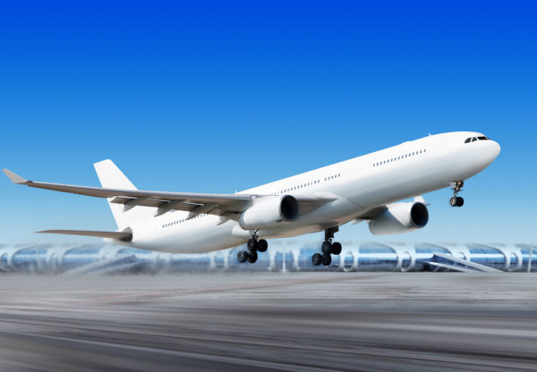

Como Funciona o Avião?
Postado em 14 de Junho de 2021 
O avião é composto por várias partes, você sabe quais são elas?
Se não conhece, confira a imagem abaixo e vejo algumas das partes mais importantes de um avião.
Fonte: Monolito Nimbus
Como Funciona o Avião na Prática?
Texto extraído do Site Super InteressanteO básico é vencer duas forças que grudam o “bichão” à terra. A primeira é a resistência do ar contra o avião ou qualquer objeto em movimento. Para superá-la, os aviões usam hélices, turbinas ou foguetes para conseguir um impulso maior que a resistência. A segunda é o próprio peso da aeronave. Nesse caso, é preciso criar uma força mais poderosa que o peso para empurrar o avião para cima – o empuxo. Fácil? Nem tanto, se a gente lembrar de um princípio da física traduzido pelo inglês Isaac Newton: toda ação gera uma reação de mesma intensidade, mas com sentido contrário. Ou seja, sempre que os primeiros inventores forçavam o avião para cima (empuxo), a resposta era uma força igualzinha para baixo (peso). E o avião não voava. A solução apareceu em outro princípio da física, enunciado pelo suíço Daniel Bernoulli: quando a velocidade da passagem do ar por uma superfície aumenta, a pressão diminui. Aí, os engenheiros desenharam asas de modo que o ar passasse mais rápido na parte de cima e mais devagar na parte de baixo. Com isso, a pressão na parte de cima da asa fica menor, e na parte de baixo fica maior, certo? Essa diferença de pressão “suga” a asa para cima, gerando um empuxo suficiente para fazer o avião levantar. No ar, pás móveis ajudam a controlar os movimentos laterais e de subida e descida, como você vê abaixo.
1. Para fazer um avião sair do chão, a primeira coisa é superar a resistência do ar a objetos em movimento. Para isso, a aeronave precisa ser impulsionada por hélices, foguetes ou turbinas. Essas últimas executam duas ações: primeiro, sugam o ar para dentro com uma grande hélice, como um exaustor gigante
2. Depois de sugar o ar, as turbinas expelem esse ar do outro lado, comprimido e acelerado por várias hélices menores. O ar supercomprimido e acelerado que sai da turbina gera uma força em sentido oposto, que “empurra” o avião pra frente fazendo-o vencer a resistência do ar
3. Vencida a resistência do ar, é hora de superar o peso de centenas de toneladas que gruda o avião ao solo. Quem vai fazer isso são as asas, especialmente desenhadas para criar um poderoso empuxo (força que empurra o avião para cima)
4. A asa mais usada em aviões comerciais tem a parte de cima curva e a da baixo reta. Esse tipo de construção induz uma diferença de velocidade na passagem do ar: o ar de cima passa mais rápido, pois percorre um caminho maior no mesmo tempo que o ar de baixo, que passa mais devagar
5. A diferença na velocidade na passagem de ar faz com que a pressão na parte de cima da asa seja menor que embaixo. Com isso, a força do peso (que atua em direção ao solo) fica menor que a força de empuxo (que atua para cima). E o avião começa a voar!
6. Para que o piloto possa controlar o ângulo de subida ou descida e realizar ajustes na velocidade do avião, as asas possuem pás móveis chamadas flaps. Eles alteram a direção da passagem do ar, mudando a diferença de pressão na asa e, por conseqüência, o empuxo do avião
7. Por fim, o avião não perde a direção graças à asa que fica em pé na parte de trás, o estabilizador vertical. Ele mantém a aeronave em linha reta. O estabilizador também tem um flap, chamado de leme, que é movido sempre que o piloto quer virar a aeronave para a esquerda ou para a direita
Fonte: Super Interessante
Postagens Recentes
O avião mais moderno: Airbus A350 XWB é uma aeronave widebody...
Leia maisO Embraer C-390 Millennium é um avião para transporte tático/logístico e reabastecimento em voo...
Leia maisEm Breve
Tecnologias usadas em aviões hoje em dia